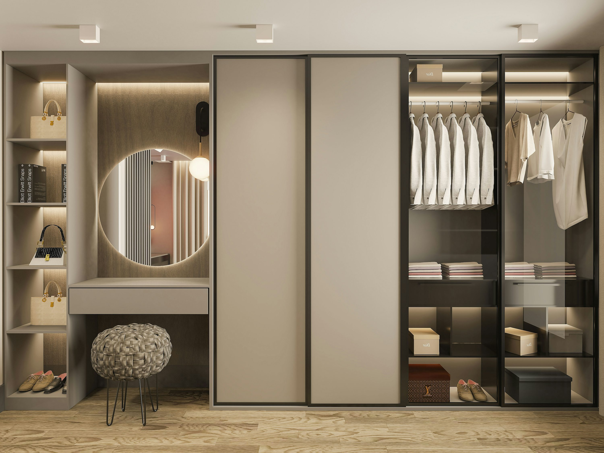

WearWise (IoT Wardrobe Management App) is a secure platform that lets users monitor personal environmental sensing devices and manage their wardrobe efficiently. Through a robust authentication system, users can register ESP32 devices, track real-time temperature and humidity data, and visualize trends on an interactive dashboard. The app also features an AI-powered assistant that provides outfit recommendations based on weather forecasts.

Key Functionalities:
• Secured User Info: Passwords are hashed and user data is protected.
• Adding Devices via QR-Code: Quickly register sensors by scanning QR codes.
• Real-Time Sensor Data Display: Monitor live temperature readings with charts.
• Smart AI Secretary: Clothing recommendations based on wardrobe and environmental data.
• Two-Factor Authentication: Optional 2FA for enhanced security.
For more details, check out the GitHub repository!